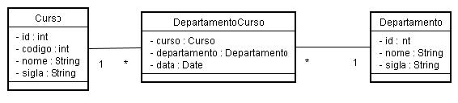
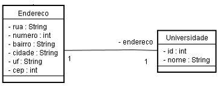

Informações
| Tipo: | Tutorial |
|---|---|
| Data de Publicação: | 21/11/2005 |
| Revisado em: | 21/11/2005 |
Vote!
Tags Relacionadas
Comentários ( 4 )
Imprimir
Mapeando Associações com Hibernate - Parte 2
por:
Raphaela Galhardo Fernandes (raphaela@jeebrasil.com.br)
Gleydson Lima (gleydson@jeebrasil.com.br)
Este tutorial apresenta a segunda parte dos mapeamentos no Hibernate de relacionamentos entre entidades. Os mapeamentos apresentados são: n-para-n com atributos e 1-para-1.
Associações n-n com Atributos
Imagine que seria necessário guardar a data em que foi feita a associação entre um determinado curso e um determinado departamento, ou seja, necessário ter um novo atributo na tabela DEPARTAMENTO_CURSO. Dessa forma, a tabela DEPARTAMENTO_CURSO não seria formada apenas pelos identificadores de curso e de departamento, mas sim também pela data. Para essa situação, os mapeamentos dos relacionamentos <many-to-many> nas tabelas Curso e Departamento não resolveriam o problema. Então, deve-se criar uma nova classe DepartamentoCurso, como mostrado no diagrama da Figura 1. Como pode ser visto nesta figura, existem agora relacionamentos <many-to-one> e uma chave primária dupla.

Figura 1 - Mapeamento n-n com Atributo
Dessa forma, o mapeamento da tabela DEPARTAMENTO_CURSO seria feito como mostrado na Listagem 1.
...
<hibernate-mapping>
<class name="br.com.j2eebrasil.dominio.DepartamentoCurso"
table="DEPARTAMENTO_CURSO">
<composite-id name="compositeID"
class="br.com.j2eebrasil.dominio.DepartamentoCursoID">
<key-many-to-one name="curso" column="ID_CURSO"
class="br.com.j2eebrasil.dominio.Curso"/>
<key-many-to-one name="departamento "
column="ID_DEPARTAMENTO"
class="br.com.j2eebrasil.dominio.Departamento "/>
</composite-id>
<property name="data" type="java.util.Date" column="data"/>
</class>
</hibernate-mapping>
Listagem 1 - DepartamentoCurso.hbm.xml
Composite-id
Como pode ser visto na Listagem 1, há o mapeamento de uma chave composta. Neste caso, a chave é um objeto da classe Curso e um objeto da classe Departamento. O primeiro passo é a criação de uma classe de domínio para a chave composta, DepartamentoCursoID (Listagem 2).public class DepartamentoCursoID implements Serializable{
private Departamento1 departamento;
private Curso1 curso;
//Métodos getter e setter
...
}
Listagem 2 - Classe de Domínio: DepartamentoCursoID
Para esse exemplo, a classe DepartamentoCurso possuirá um atributo Date data e um atributo DepartamentoCursoID compositeID. Veja Listagem 3.
public class DepartamentoCurso implements Serializable{
private DepartamentoCursoID compositeID;
private Date data;
//Métodos getter e setter
...
}
Listagem 3 - Classe de Domínio: DepartamentoCursos
Observando a Listagem 1, vê-se que a tag <composite-id> mapeia a chave composta. O atributo name informa o atributo que mapeia a chave composta e o atributo class a classe de domínio, no caso br.com.j2eebrasil.dominio.DepartamentoCursoID. O corpo da tag é formado por duas outras tags <key-many-to-one> que informam os atributos da chave composta dentro da classe DepartamentoCursoID.
Para exemplificar o relacionamento n-n com atributos, observe o exemplo da Listagem 4. Primeiro um departamento e um curso são buscados da base de dados, ambos com identificadores iguais a 1. Em seguida, cria-se uma instância de um objeto da classe DepartamentoCursoID que representa a chave composta. Os valores que compõem a chave, curso e departamento, são atribuídos. Finalmente, cria-se um objeto da classe DepartamentoCurso que representa a tabela de relacionamento entre as entidades, define-se a sua chave composta e a data de criação, persistindo-o na base de dados.
... Departamento d = (Departamento)session.get(Departament1.class, 1); Curso c = (Curso)session.get(Curso.class, 1); DepartamentoCursoID dcID = new DepartamentoCursoID(); dcID.setDepartamento(d); dcID.setCurso(c); DepartamentoCurso dc = new DepartamentoCurso(); dc.setCompositeID(dcID); dc.setData(new Date()); session.save(dc); ...
Listagem 4 - Exemplo: Relacionamento n-n com atributos
O resultado da execução do código presente na Listagem 4 pode ser visto na Listagem 5.
Hibernate: select departamen0_.ID_DEPARTAMENTO as ID1_0_ from DEPARTAMENTO1 departamen0_ where departamen0_.ID_DEPARTAMENTO=? Hibernate: select curso1x0_.ID_CURSO as ID1_0_ from CURSO1 curso1x0_ where curso1x0_.ID_CURSO=? Hibernate: insert into DEPARTAMENTO_CURSO (data, ID_CURSO, ID_DEPARTAMENTO) values (?, ?, ?)
Listagem 5 – Resultado da execução do código presente na Listagem 4
Associações 1-1 (one-to-one)
Para exemplificar o relacionamento 1-1, considere o relacionamento na Figura 2 entre as entidades Universidade e Endereco, ou seja, uma universidade tem um único endereço e um endereço pertence apenas a uma única universidade.

Figura 2 - Relacionamenteo 1-1 entre Universidade e Endereco
As Listagens 6 e 7 apresentam as classes Java para as entidades Universidade e Endereco, respectivamente.
package br.com.j2eebrasil.dominio;
public class Endereco implements Serializable{
private int id;
private String rua;
private int numero;
private String bairro;
private String cidade;
private String uf;
private int cep;
private Universidade universidade;
//Implementação dos métodos setter e getter
...
}
Listagem 6 – Classe de Domínio: Endereço
package br.com.jeebrasil.dominio;
import java.util.Collection;
public class Universidade implements Serializable{
private int id;
private String nome;
private Endereco endereco;
private Collection centros;
//Implementação dos métodos setter e getter
...
}
Listagem 7 - Classe de Domínio: Universidade
Existem duas formas de se mapear este relacionamento 1-1. A primeira estratégia é no mapeamento da entidade Universidade adicionar um mapeamento <many-to-one> para a tabela Endereco. O mapeamento da entidade Endereco é visto na Listagem 8 e não apresenta nenhuma novidade.
...
<hibernate-mapping>
<class name="br.com.j2eebrasil.dominio.Endereco" table="ENDERECO">
<id name="id" column="ID_ENDERECO" type="int">
<generator class="native"/>
</id>
<property name="rua"/>
<property name="numero"/>
<property name="bairro"/>
<property name="cidade"/>
<property name="uf"/>
<property name="cep"/>
</class>
</hibernate-mapping>
Listagem 8 - Endereco.hbm.xml
Para realizar o mapeamento 1-1 de acordo com essa estratégia, basta inserir um mapeamento <many-to-one> no mapeamento da tabela Universidade (Listagem 7) como mostrado na Listagem 9.
...
<many-to-one name="endereco"
class="br.com.j2eebrasil.dominio.Endereco"
column="ID_ENDERECO"
cascade="save-update" unique="true"/>
...
Listagem 9 – Relacionamento 1-1 em Universidade.hbm.xml: 1ª estratégia
Veja que o atributo cascade foi definido como save-update o que implica em o objeto Endereco ser inserido ou atualizado automaticamente quando o objeto Universidade for inserido ou atualizado. Nesse mapeamento aparece o atributo unique, que quando assume valor true implica em ter apenas uma universidade por endereço.
A outra abordagem é ao invés de inserir o código da Listagem, 9 no mapeamento de Universidade.hbm.xml, inserir o código mostrado na Listagem 10. A tag <one-to-one> define o relacionamento 1-1 que a classe Universidade tem com a classe Endereco. Os atributos desta tag não são novidades.
...
<one-to-one name="endereco"
class="br.com.j2eebrasil.dominio.Endereco"
cascade="save-update"/>
...
Listagem 10 - Relacionamento 1-1 em Universidade.hbm.xml: 2ª estratégia
Para utilizar a tag <one-to-one> no arquivo Universidade.hbm.xml, o mapeamento do endereço em Endereco.hbm.xml deve ser feito como mostrado na Listagem 11.
...<class name="br.com.j2eebrasil.dominio.Endereco" table="ENDERECO"> <id name="id" column="ID_UNIVERSIDADE" type="int"> <generator class="foreign"> <param name="property">universidade</param> </generator> </id> <property name="rua"/> <property name="numero"/> <property name="bairro"/> <property name="cidade"/> <property name="uf"/> <property name="cep"/> <one-to-one name="universidade" class="br.com.j2eebrasil.dominio.Universidade" constrained="true"/> </class> </hibernate-mapping>
Listagem 11 - Relacionamento 1-1 em Endereco.hbm.xml: 2ª estratégia
A primeira diferença para o mapeamento anterior da entidade Endereco é o valor do atributo class da tag generator agora é foreign. A tag param de name igual a property permite a associação 1-1 da classe Endereco com a classe Universidade, o que acontece é que um parâmetro é passado para a classe geradora do identificador, que neste caso é a propriedade universidade, que é da classe que se relaciona 1-1 com Endereco. A garantia de que um endereço pertença a uma única universidade vem do fato da chave primária da tabela ENDERECO (ID_UNIVERSIDADE) ser também a chave estrangeira que liga a Universidade.
O mapeamento 1-1 em Endereco de Universidade também é feito utilizando a tag <one-to-one>. A única novidade da tag é o atributo constrained que sendo igual a true, implica em existir uma relação entre a chave primária de Endereco e de Universidade, informando ao Hibernate que um endereço não pode existir sem que uma universidade exista.
Conclusões
Neste tutorial foram apresentados os mapeamentos de relacionamentos n-n com atributos e 1-1. O próximo módulo será referente ao mapeamento de coleções (Bag, Map, List, Set) usando o Hibernate.
Referências
- Christian Bauer e Gavin King. Hibernate in Action. 2005.
- Grupo Hibernate. Hibernate Reference Documentation. Version 3.0.5. Obtido em http://www.hibernate.org
- Gleydson de Azevedo Ferreira Lima. Material Didático. 2005.
- Nick Heudecker. Introdução ao Hibernate.
- Maurício Linhares. Introdução ao Hibernate 3.
- Francesc Rosés Albiol. Introducción a Hibernate. 2003.
- Fabiano Kraemer, Jerônimo Jardel Vogt. Hibernate, um Robusto Framework de Persistência Objeto-Relacional. 2005.
Comentários (4)
- Muito bom material sobre Hibernate, é bom que a comunidade Java esteja transmitindo informacoes sobre Hibernate.
- postado por Jefferson em 26/04/2007 às 23:21
- excelente texto. volta e meia eu volto aqui pra relembrar algo que passou despercebido. Parabéns
- postado por Afonso Henrique junior em 09/01/2008 às 23:21
- Muito bom. Mas eu estou utilizando hibernate annotations, neste caso eu estou precisando fazer o mapeamento de um auto-relacionamento m-to-m. E esse auto-relacionamento tem um atributo. Porém ele deverá ser uma tabela mas essa tabela tem chaves compostas. Como posso fazer para mapear essa tabela com essas características?. Grata
- postado por Joana em 28/05/2008 às 23:21
- excelente material que desde o inicio de minha vida profissional no mundo java, venho utilizando. Obrigado pela ajuda.
- postado por Dionizio em 21/11/2008 às 23:21